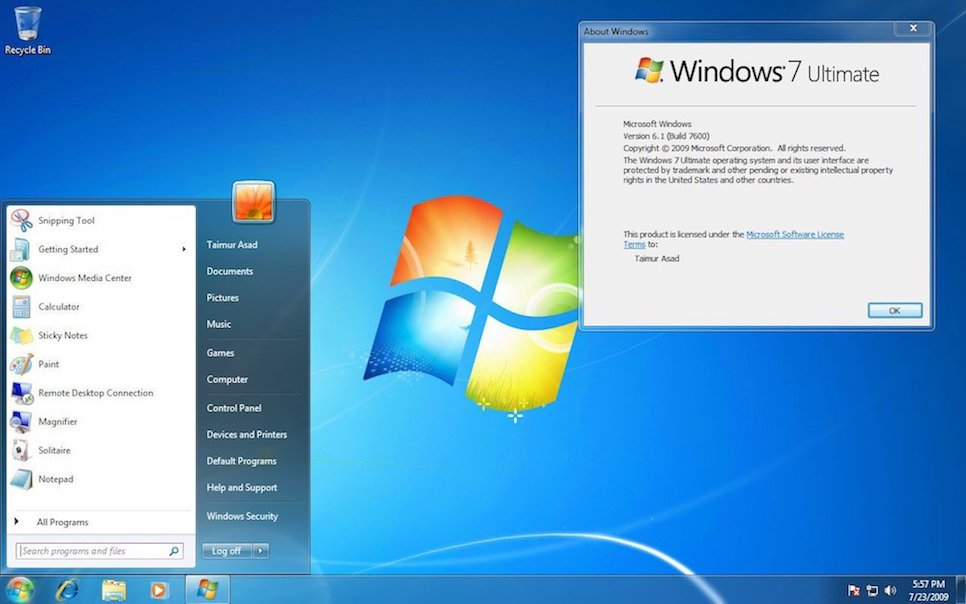
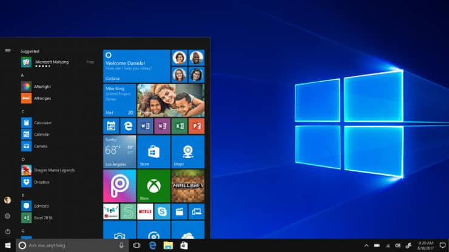

Trendy web design elements can attract your target audience to your site. Beautiful and appealing designs enhance website content and establish a good reputation for your brand.
It’s important, however, for businesses to prioritize the user if they redesign their website. People appreciate beautiful and updated designs, but not when the trendy design interferes with their ability to use the website and access the content they need.
I can explain this in detail by using the example of Windows
Windows 7, shown below, had rounded corners and beveled buttons on the toolbar, including the round start button around the Windows logo.
Windows 8, pictured below, replaced the traditional Windows design with two-dimensional shapes that are sleek and colorful.
The design elements in Windows 8 are responsive but have a more modern feel than the previous iterations. “Tiles” replaced the traditional icons and menu items in the toolbar. Even the iconic logo became flat.
The abrupt departure from earlier design, however, caused confusion among some users.
We can’t really tell if elements are clickable because they don’t have any bevel or shadow
Combining the sleek, digital look of flat design with subtle gradients and shadows provides a timeless – but not invasive – design that companies can use for years.
Goto Feature 1 Goto Feature 3